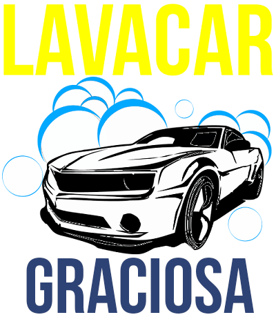

|  | Diagnóstico do Veículo |
|
|---|---|---|
NºOS: 12021322 |
Proprietário.: | Karlla Renatta |
| Placa.: | adk-0190 |
|
| Modelo.: | Ford Focus |
|
| Valor Total.: | 35,00 |
|
| Atendente.: | (null) |
|
| Supervisor.: | (null) |
|
| Gorjeta.: | 0,00 |
|
| O extintor vence em: | 21312 |
|
| Km Atual de óleo: | 1231231 |
|
| Km para a próxima troca de óleo: | 213123131 |
|
| Observações: | Muito Bom |
|
Serviços Prestados |
||
| Nome: | 1. Lavagem Interna |
|
| Valor: | 35,00 |
|
| Descrição: | O serviço de Lavagem Interna é feito uma limpeza interna no veículo onde os funcionários tende a fazer o melhor para que seu carro se torne um ambiente
muito agradavél. |
|
Serviços Sugeridos |
||
| Nome: | Lavagem Externa | |
| Descrição: | O serviço de Lavagem Externa é relizado uma limpeza externa do veículo onde os funcionários trabalham com a busca da prefeição do serviço executado. | |